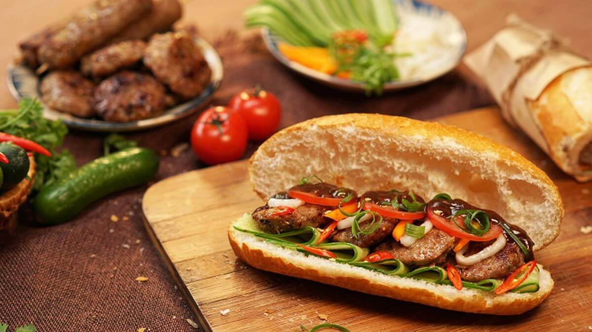

Banh Mi Recipe

This is an example of a traditional Vietnamese
Banh mi is a staple breakfast food in Vietnam! They are found on almost every sidewalks in Ho Chi Minh City.
It typically contains fresh vegetables, pickled carrots and daikons, a type of meat, all wrapped in a frech styled baguette.
Ingredients
- 2 teaspoons olive oil
- 1 carrot, sliced into sticks
- 1 daikon (white) radish, sliced into sticks
- 1 cup rice vinegar
- 2 teaspoons soy sauce
- 1 teaspoon nuoc mam (Vietnamese fish sauce)
- 8 sprigs fresh cilantro with stems
- 1 medium cucumber, sliced into thin strips
- 2 (7 inch) French bread baguettes, split lengthwise
- 2 teaspoons minced garlic
Steps
- Preheat the oven to 450 degrees F (230 degrees C). Place the mushrooms on a baking sheet.
Drizzle with a little olive oil and season with salt and pepper. Roast in the preheated oven
for about 25 minutes. Cool slightly, then slice into strips.
- While the mushrooms are roasting, bring a saucepan of water to a boil. Plunge the carrot and
radish sticks into the boiling water and after a few seconds, remove them and plunge them into
a bowl of ice water to stop the cooking. In a separate bowl, stir together the rice vinegar,
1/2 cup of lime juice and 1/2 cup cold water. Transfer the carrot and radish to the vinegar and
lime marinade and let them soak for at least 15 minutes, longer if it's convenient.
- In a small bowl, stir together the remaining lime juice, soy sauce, fish sauce, sesame oil,
canola oil, 1/3 cup sugar and 1/3 cup water. This is the sandwich sauce.
- To assemble sandwiches, sprinkle a little of the sandwich sauce onto each half of the French
loaves. Place the roasted mushrooms onto the bottom half of each roll and sprinkle with a little
more sauce. Top with a few slices of jalapeno, a few sticks of carrot and radish
(minus the marinade), cucumber, basil and cilantro. Close with the tops of the bread and serve.